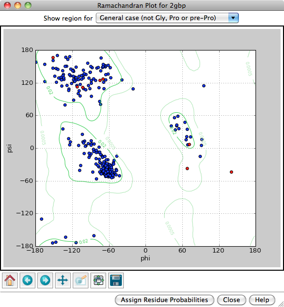

|  |
The Ramachandran plot function in the Model Panel plots the distribution of amino acid backbone conformations in peptide and protein structures. It is also implemented as the command ramachandran. See also: RR Distance Maps, Rotamers, Structure Measurements, ksdssp
Each amino acid residue is shown as a dot in a graph of φ vs. ψ, more commonly known as a Ramachandran plot or Ramachandran map. Residues are shown as blue dots, or when selected, as red dots. Conversely, clicking a single dot on the plot will select the corresponding residue in the structure.
Probability contours based on a reference set of high-resolution proteins can be shown on the plot as green lines. The reference set and resulting φ,ψ distributions are described in:
Structure validation by Cα geometry: φ,ψ and Cβ deviation. Lovell SC, Davis IW, Arendall WB 3rd, de Bakker PI, Word JM, Prisant MG, Richardson JS, Richardson DC. Proteins. 2003 Feb 15;50(3):437-50Probability contours can be displayed for different subsets of the amino acid residues in the reference proteins, as indicated next to Show region for:
Assign Residue Probabilities assigns an attribute named ramaProb to the amino acid residues, with values taken from the appropriate dataset for each residue (Proline for prolines, etc.), and opens the Render/Select by Attribute tool.
Close removes the Ramachandran plot. Help opens this manual page in a browser window.
Whether or not a Ramachandran plot is shown, phi (φ) and psi (ψ) are automatically assigned as residue attributes, and as such can be viewed/changed in the Selection Inspector or changed with setattr.
{kind=link}